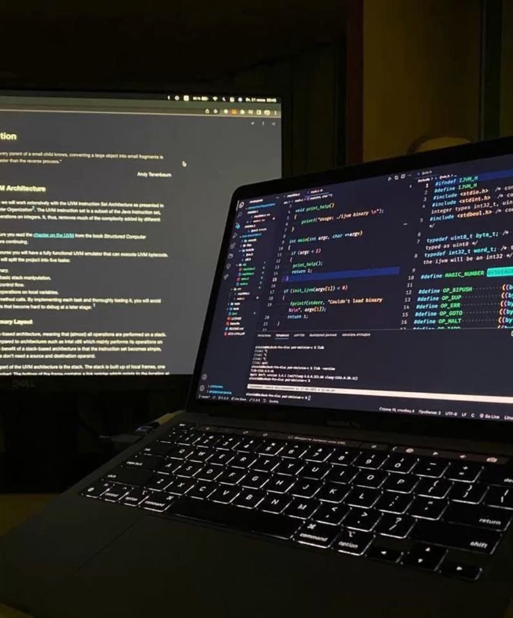
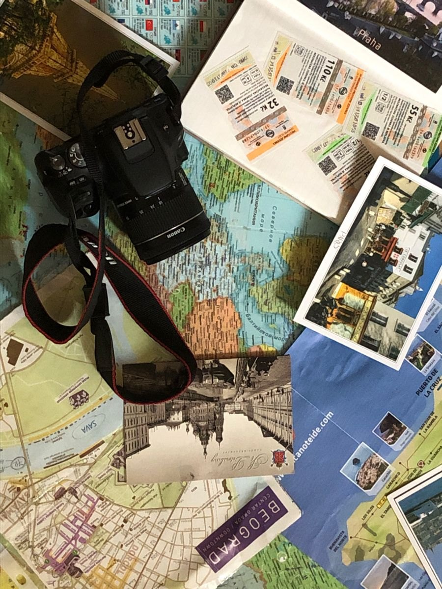

Gaming
Unwinding with video games in my free time.
BS Computer Science, Ateneo de Davao University
A Computer Science student learning software development, data structures, and web design.
Launch any of my four Introduction to Computing web applications below, or visit the CS 1130 Programs Hub.

I am pursuing a Bachelor of Science in Computer Science at Ateneo de Davao University.
I enjoy building programs in C, C++, Java, and Python, as well as creating clean web pages with HTML & CSS and interactive animations in Wick.

What I do when I’m away from the screen, and sometimes on it.
Unwinding with video games in my free time.
Staying active and playing with friends.

Practicing algorithms and building personal projects.

Exploring new places and experiencing new things.